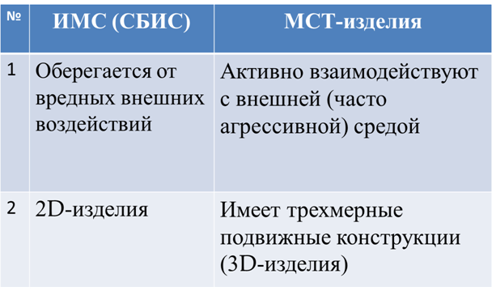
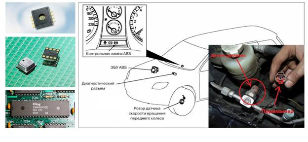
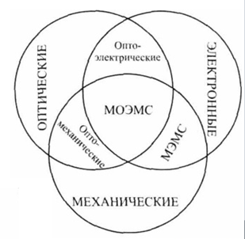
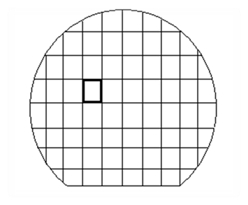
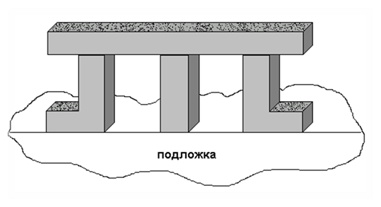
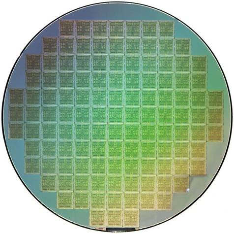
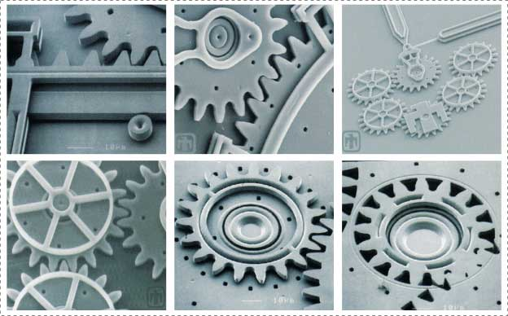
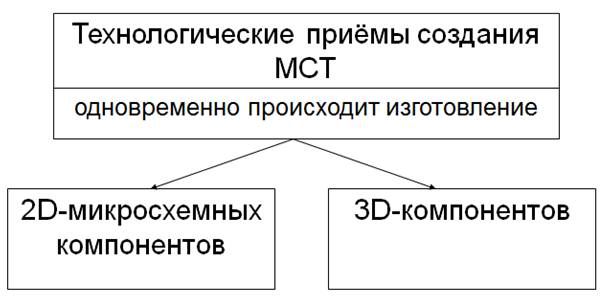
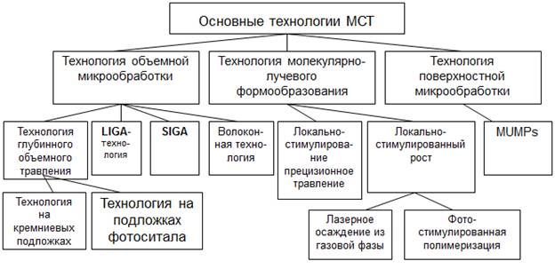

электронный
ресурс по учебной дисциплине 1-58 01 01 - "ИНЖЕНЕРНО-ПСИХОЛОГИЧЕСКОЕ ОБЕСПЕЧЕНИЕ ИНФОРМАЦИОННЫХ ТЕХНОЛОГИЙ"
|
||
| Оглавление | Программа | Теория | Практика| Контроль знаний | Об авторах | ||
|
Содержание
ТЕМА 9 Разновидности микросистемных технологий § 9.1 Современная классификации микросистемных технологий § 9.1 Современная классификации микросистемных технологий Выделяют два этапа в микротехнологии: - микроэлектроника; - микросистемная техника. Изделие МСТ – это сложнейший «интеллектуальный» объёмный ЗD – микрочип, содержащий три основных части: 1. сенсорную; 2. вычислительную (информационно-обрабатывающую и принимающую решения); 3. исполнительную. На рисунке 9.1 представлены различия между ИМС(СБИС) и МСТ-изделиями. Эти отличия определяют принципиально новые требования к проектированию, технологии и материалам МСТ-изделий. Рисунок 9.1 – Различия между ИМС(СБИС) и МСТ-изделиями. Таблица 9.1 – Как ее назвать?
 Рисунок 9.2 – Датчик давления в автомобилях Другие примеры МСТ-изделий: 1) Микрогироскопы – для систем навигации и ориентации. Чип 3х4 мм. 2) Тепловые машины: газовая микротурбина –(электрогенератор); жидкостный реактивный микродвигатель 3) Химические микроанализаторы, позволяют создать сверхпортативные аналитические химлаборатории ( электронный нос, электронный язык) 4) Хирургические микроинструменты для операций на уровне отдельных клеток. Обозначение научно-технического направления: 1. Мехатроника 2. Механотроника 3. Микромеханотроника 4. Микромеханика 5. Микротехника 6. Микроприборостроение. 7. Микроэлектромеханика (microelectromechanics) 8. Микросистемная техника (МСТ)  Рисунок 9.3 – Научно-технические направления микросистемной техники Обозначение изделий: 1. Микроэлектромеханические системы (МЭМС) – microelectromechanical system (MEMS). Принято в США. 2. Микрооптоэлектромеханические системы (МОЭМС) – microopticalelectromechanical system (MOEMS). Принято в США. 3. Микромашины – micromachines. Принято в Японии. 4. Микросистемная техника (МСТ) – официально принято в России (ГОСТ). 5. Микросистемная техника – microsystem technics (MST). Принято в Европе. 6. Микросистемы, микроприборы. 7. Микроустройства, микроисполнительные устройства. 8. Микродатчики, микроэлектронные датчики. 9. Микродвигатели (микродвижители). Обозначение технологии: 1. Микрообработка – micromachining. 2. МЭМС – технология (технология МЭМС). 3. Технология микрообработки. 4. МСТ – технология (технология МСТ). 5. Микросистемная технология – microsystem technology. 6. Технология производства кремниевых и некремниевых изделий миниатюрных размеров. ЗD-технология, т.е. технология создания трёхмерных изделий (объемных микроформ). ИМС – это практически 2D-изделия, МСТ – это 3D-изделия. Имеется в виду, что высота МСТ элементов, в отличие от композиций классической микроэлектроники, может превосходить их размеры на поверхности подложки, т.е. на поверхности подложки происходит формирование настоящих объемных структур.  Рисунок 9.4 – Чипы ИМС на кремниевой подложке(пластине)
 Рисунок 9.5 – Пример объемных МСТ-элементов
 Рисунок 9.6 – Чипы ИМС на кремниевой подложке(пластине)  Рисунок 9.7 – Пример объемных МСТ-элементов Очень часто требуемые функции МЭМС могут быть получены только при создании трёхмерных структур. Датчики механических величин и МИУ (микроисполнительные устройства) часто должны содержать подвижные детали. Понятно, что технологические примеры создания МСТ изделий включают в себя изготовление одновременно 2D- и 3D-cоставляющих (рисунок 9.8)  Рисунок 9.8 – Технологические приемы создания МСТ Разновидности МСТ технологий. В основе всех процессов получения микроформ лежит литография. Это технологический процесс, обеспечивающий получение микроразмеров. Разновидности МСТ–технологий представлены на рисунке 9.9  Рисунок 9.9 – Разновидности МСТ–технологий
| |
| (С) БГУИР |